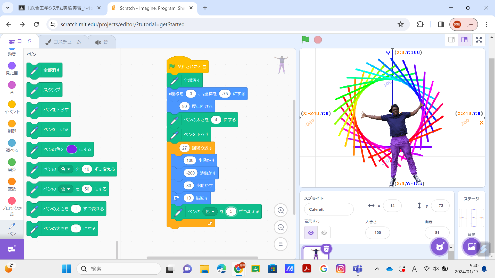
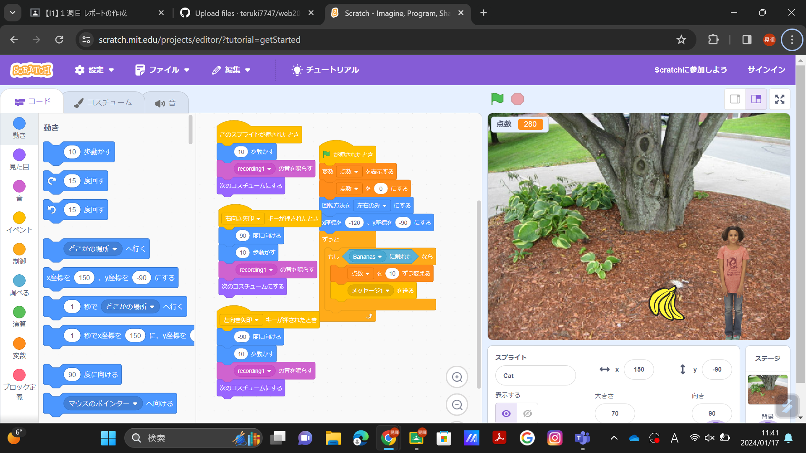

1週目のレポート ： 公大高専１年実習I-1
02班25番 teruki7747
第1週目
1-1 サイエンスアート

1.内容
スクラッチを使って線を書くプログラムをつくった。
2.感想
実習のはじめの方は説明用紙を見ないとわからなかったが、徐々に慣れて説明用紙をみなくてもできるようになり、とても楽しく感じた。
1-2 ゲーム

1.内容
バナナがいろいろなところに落ち、犬がそれをキャッチするとバナナが消え点数がつくプログラミング。
2.感想
初めの内容でとても慣れていたので、すぐにできた。友達にも教えるくらい暇があり、もっと自分の知識を深めれた気がした。
1-3 ホームページ作成
私のホームページ
1.内容
自分のホームページをつくり、自己紹介文を書いたりした。
2.感想
ほぼ日本語がなく、少し難しかったが、すごく楽しくおもしろく作業できた。 スマホで自分のホームページがでてきたとき、何とも言えない感情になったがなぜかうれしかった。